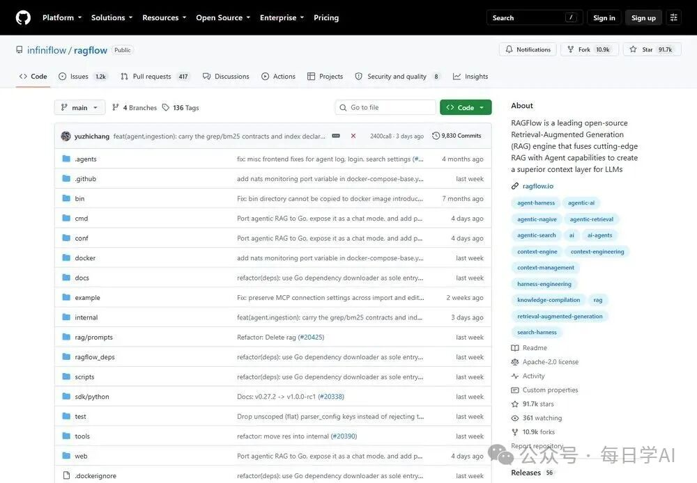
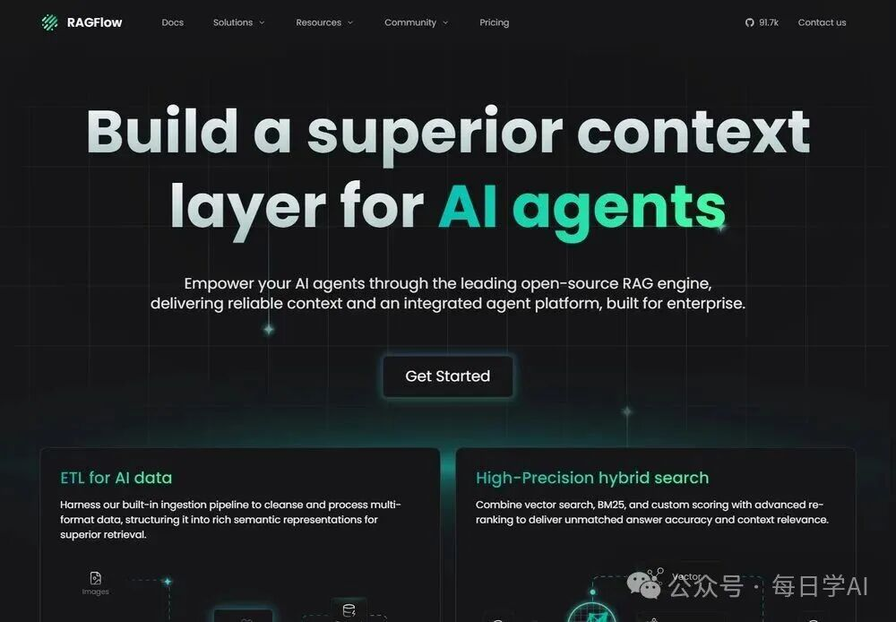
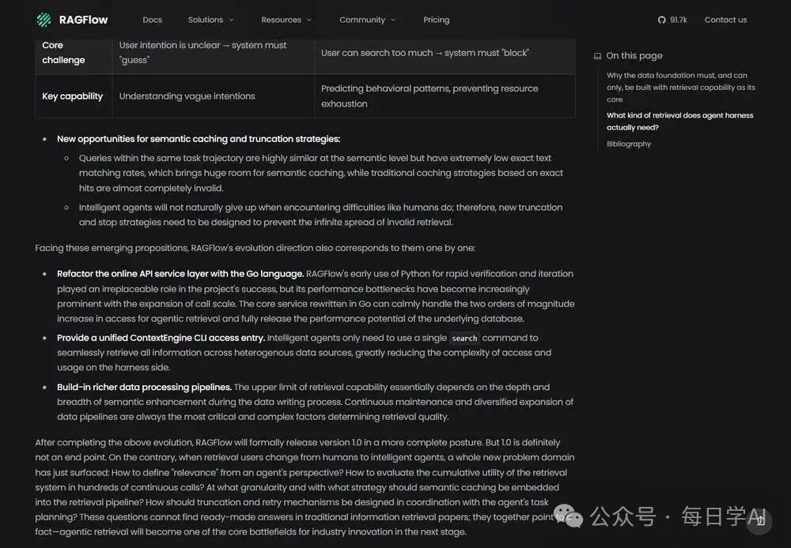
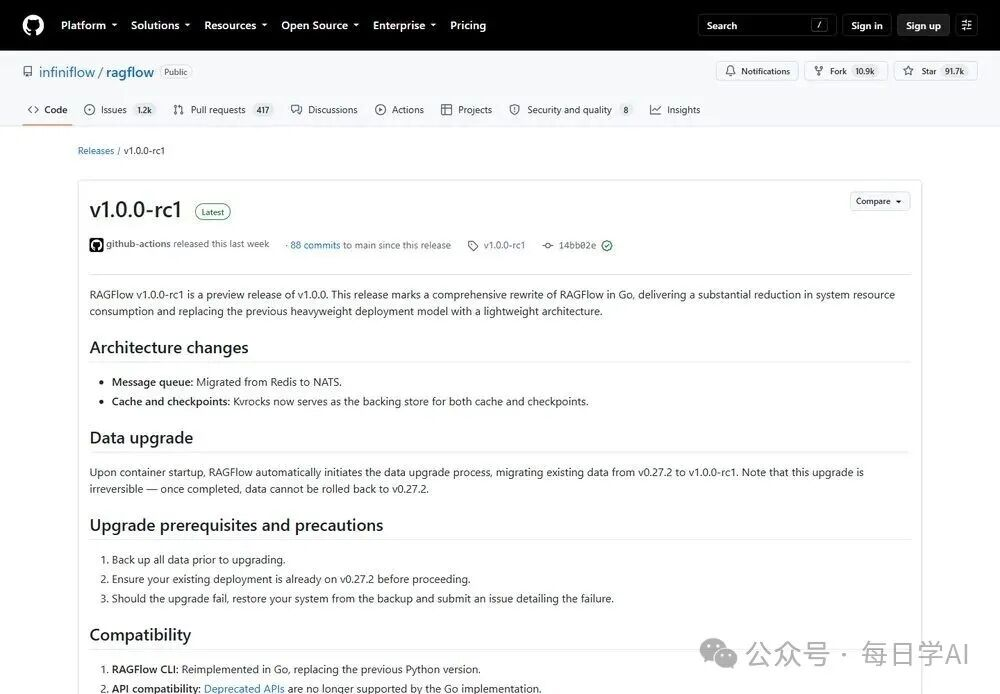
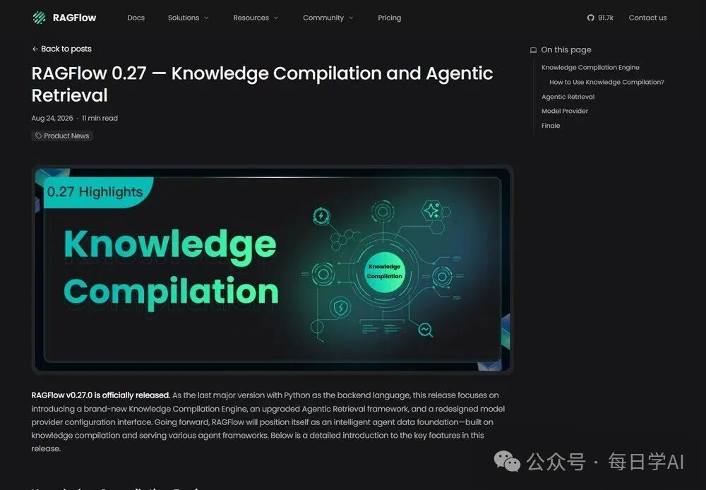

91.7k 星之后，RAGFlow 把后端整个换成了 Go
来源：微信公众号 归档日期：2026-10-07 抓取状态：成功 原文字符：5477｜配图：5 张
摘要速览
- 摘要 RAGFlow 发布了 1.0-rc1，最大的变化不是新功能，而是把跑了两年的 Python 后端整个重写成了 Go。这篇文章讲清三件事：它为什么要冒这个风险、除了换语言还改了什么、以及升级到 1.0 你需要付什么代价。 2026 年 9 月 29 日，RAGFlow 在 GitHub 上打了一个新标签：v1.0.0-rc1。
核心内容
（待补充）
可执行启发
（待补充）
我的想法
（待补充）
原文沉淀
来源：https://mp.weixin.qq.com/s/xyLlUlHJG7zbs32B3ibarw 平台：weixin｜作者：每日学AI 抓取方式：cdp｜字符数：6259｜图片：5
摘要 RAGFlow 发布了 1.0-rc1，最大的变化不是新功能，而是把跑了两年的 Python 后端整个重写成了 Go。这篇文章讲清三件事：它为什么要冒这个风险、除了换语言还改了什么、以及升级到 1.0 你需要付什么代价。
2026 年 9 月 29 日，RAGFlow 在 GitHub 上打了一个新标签：v1.0.0-rc1。
大多数项目发 1.0，都在忙着加功能。RAGFlow 这次发 1.0，先做的是换语言。
它的 Release 说明写得很直白：这是一次用 Go 完成的重写，用轻量架构替换掉原来那套重型的部署方案。
翻译一下就是：一个在 GitHub 上已经拿到 91.7k star、有一万多 fork 的开源项目，决定把自己跑了两年的主干代码，重新写一遍。
这种事在开源世界里并不常见。重写要付代价：历史包袱全部作废、社区贡献的代码可能白费、用户的升级路径得重新设计。
RAGFlow 愿意付这个代价，是因为它发现了一件更要紧的事——
它的用户，正在从人变成 Agent。
（Agent，就是能自己拆解任务、自己调工具去干的 AI 程序。你说"帮我查一下"，它会自己决定查哪里、查几次。）

图 1 · RAGFlow GitHub 仓库首页，star 数 91.7k，仓库标签里已有 agent-harness、knowledge-compilation
先说清楚 RAGFlow 是什么
一句话：它是个给 AI 用的"资料室管理员"。
你可以把它想成公司里那个什么都找得到的老员工：你把合同、报表、说明书一股脑交给他，他分门别类归好档；下次你问"去年那份供应商协议里的违约金是多少"，他把原件抽出来放你面前，还能指出是哪一页。
RAGFlow 干的是同一件事，只是它的"员工"是 AI。它把 Word、PDF、扫描件、网页这些格式乱七八糟的资料吃进去，解析、切分、建索引；你提问时，它把最相关的原文片段找出来交给大模型，让模型"照着材料回答"，而不是凭空发挥。
技术上说，这类系统叫 RAG（Retrieval-Augmented Generation，检索增强生成），是目前让大模型少胡说的主流办法之一：模型不负责记，只负责说；记忆交给检索系统。
RAGFlow 由 InfiniFlow 团队开发，2024 年 4 月 1 日开源，Apache-2.0 许可，可商用。到 2024 年底它已有 2.6 万 star；2026 年 10 月，这个数字是 91.7k。

图 2 · RAGFlow 官网首页，官方把自己定位为"面向 AI 智能体的上下文层"
还有个细节。早期 RAGFlow 的自我定位是"RAG 引擎"，官网现在第一句话却是"给 AI 智能体构建更好的上下文层"（Build a superior context layer for AI agents）。
定位的变化，就是后面所有架构改动的起点。
Agent 变成了新用户，这才是重写的真正原因
RAGFlow 官方博客里有一篇文章，标题叫《Data foundation in the era of agent harness》。它把逻辑讲得很清楚。
过去用检索系统的是人，而人查资料有个特点——不太会搜。你说"帮我找找报销的事儿"，系统得去猜你到底想问报销标准、流程还是时限。所以传统检索优化的重点，是理解模糊的意图。
现在用检索系统的，越来越多是 Agent，而 Agent 太会搜了。它不会客气，一个问题拆成十几个子问题轮着问，查不到就换个说法再查一遍，直到凑齐它认为足够的证据。
官方的判断是：Agent 发起的搜索请求量，可能比人类用户高出 两个数量级。
两个数量级就是一百倍。这不是优化空间的问题，是量级的问题。

图 3 · 官方博客解释为什么要把服务层用 Go 重写：Python 的性能瓶颈随着调用规模扩大越来越突出
而 RAGFlow 的后端是用 Python 写的。
官方对 Python 的评价很有意思，没有贬低，反而先肯定：
"RAGFlow 早期用 Python 做快速验证和迭代，对项目的成功起到了不可替代的作用。"紧接着是一个转折——"但随着调用规模的扩大，它的性能瓶颈变得越来越突出。"
于是就有了那句关键的话：用 Go 重写的核心服务，可以从容应对 agentic 检索带来的两个数量级的访问增长。
这话里藏着两层意思：官方承认 Python 版的瓶颈真实存在，而且他们不打算靠加机器硬扛，选择把语言换掉。
这件事其实早有伏笔。翻版本记录能看到，Go 化不是 1.0 才开始的：0.26.1 就把消息队列从 Redis 换成了 NATS，还把画布引擎和二十多个 Agent 组件移植成了 Go；0.26.4 又把三个后端服务合并成一个二进制。
1.0-rc1 只是把这条路走到尽头——官方博客明确写着，0.27 版本（2026 年 8 月发布）是最后一个基于 Python 的版本。
Go 版到底改了什么
对使用者来说，最直观的是两处变化。
第一，服务合并了。以前 API、Admin、Ingestor、Syncer 是几个分散的服务，现在由一个统一的 Go 服务提供。文档解析的核心模块 DeepDoc 也被收进同一个进程，负责版面分析、OCR（把图片和扫描件里的字认出来）和表格识别。
第二，底层组件换血。消息队列从 Redis 换成 NATS，缓存和断点记录改用 Kvrocks。官方的总结是：把原来那套"重"的部署模型换成轻量架构，系统资源消耗有明显下降。
⚠️ 注意这里要说句实话：官方并没有公布 Go 版和 Python 版的具体资源占用对比数字。"大幅下降"是官方口径，没给测试环境、对比基准和百分比，所以只能当方向看，不能当结论用。

图 4 · v1.0.0-rc1 的 Release 说明：Go 全量重写、架构变更与升级注意事项
比换语言更大的改动：把文档"编译"成知识
如果说换语言是"换发动机"，那 0.27 版本引入的知识编译（Knowledge Compilation），相当于换了整套工作方式。
先看老办法。传统做法是把文档切成一块一块（业界叫 chunk），每块算成一串数字（业界叫向量）存起来；你提问时，系统比一比哪几块跟问题最像，捞出来交给模型。
这个方法有个朴素的问题：切分的位置，决定了系统能看见什么。
举个例子。一篇五千字的项目报告，按五百字一块切，第一块在讲背景，第二块跳到实验数据，第三块切在表格中间。你问"实验用了什么数据集"，而这句话恰好横跨第二块和第三块的分界——系统可能只捞到半句话，自然答不上来。
知识编译想解决的就是这个问题。它不再满足于"切成块"，而是先把文档里的实体、关系、概念、时间、层级结构识别出来，再按不同形态重新组织。官方给出的产物有七种：
•Wiki：把零散材料编成互相链接的知识页面，可编辑、可版本对比、可导出
•Graph：抽取实体和关系，生成可交互的知识图谱
•Tree：按语义层级组织，从高层主题逐级下探
•Page Index：按标题、章节、关键事实生成层级索引，适合长篇报告
•Mind Map：围绕中心主题铺开的思维导图
•Timeline：把文档里的时间和事件按顺序排列
•Skills：把知识组织成一组可复用的技能文件
官方说这个概念的灵感来自 Karpathy 提过的"LLM Wiki"，但在 RAGFlow 里范围更宽。它要达到的效果是：把"处理一次就完了"的解析结果，变成长期可搜索、可复用的知识资产。
跟它配套的是 Agentic 检索。传统 RAG 是一条固定的线：提问 → 检索一次 → 拿到片段 → 生成答案。Agentic 检索换成了会思考的流程：分析问题 → 制定检索策略 → 执行检索 → 判断证据够不够 → 不够就换个问法再来一轮 → 最后综合信息作答。
官方 README 里列了四档思考模式：Low、Medium、High、Ultra，档位越高，拆解和验证越深。有意思的是，官方博客里还有第五档 Naive——就是原来的传统流程。两处口径对档位数的说法不完全一致，但方向是清楚的：让检索深度可以调，简单问题别浪费算力，复杂问题多花几轮。

图 5 · 官方博客介绍 0.27 的知识编译与 Agentic 检索，文中写明这是最后一个 Python 后端版本
顺带说一个信号。0.27 把早前引入的 GraphRAG 和 RAPTOR 从界面上移除了，标注为"已弃用"。这两个是 RAGFlow 2024 年就集成进去、并且对外宣传过的技术。
移除它们、换上知识编译，说明团队认为"图"和"递归摘要"这类单点技术，应该被收进一个更统一的框架，而不是各自摆在功能列表上。
这次升级的代价，比想象中重
这一节是全文最该认真看的。
第一，升级不可逆。容器启动时会自动把数据从 v0.27.2 迁移到 v1.0.0-rc1。官方在 Release 说明里特意加粗提醒：这次升级一旦完成，数据无法回滚到 v0.27.2。而且升级有个硬性前提——你的部署必须先处在 v0.27.2。也就是说，用更老版本的话，得先升到 0.27.2，才能往 1.0 走。
第二，有破坏性变更。Go 实现不再支持已标记为废弃的 API；命令行管理工具 RAGFlow CLI 也被 Go 重写，替换掉原来的 Python 版本。好消息是 Python SDK 不受影响。
第三，1.0-rc1 还是预览版。官方自己列了几条已知问题：DeepDoc 目前只支持 CPU、不再支持本地 sandbox、Team/Me 权限模型还没做。rc 即 release candidate，功能基本定了，但这些坑得心里有数。
第四，门槛不低。官方给的起步配置是 4 核 CPU、16 GB 内存、50 GB 磁盘。实际还要看文档引擎、数据规模和并发量——想在老笔记本上随便玩玩，会有压力。
⚠️ 注意最后提醒一句：生产环境别在 rc 版本上跑，这是常识。
1.0 不是终点
把这几件事串起来看，RAGFlow 的 1.0 其实在回答一个问题：当 AI 开始自己查资料，检索系统该长什么样？
答案落在三件事上：服务层要能扛量，所以换成 Go；知识的组织方式要从"切块"升级成"编译"，因为 Agent 需要的是结构化证据，不是一堆文本碎片；检索过程要从"查一次"变成"会规划"，因为 Agent 提交的问题，往往一句话里就藏着好几个子问题。
RAGFlow 不是唯一往这个方向走的项目，但它是做得最彻底的开源项目之一——彻底到愿意把自己跑了两年的代码重写一遍。
顺带一提，GitHub 的 Octoverse 2025 报告把 RAGFlow 列进了"按贡献者增长最快"的开源项目名单，官方博客披露的贡献者参与度同比增长是 2596%。这个数字解释了它为什么敢重写：背后有人在持续填坑。
官方博客里还有一句话，我觉得比整个 1.0 的更新日志都值得记住：
"当检索的用户从人变成智能体，一个全新的问题域才刚刚浮出水面。"
这句话后面跟着一串他们自己也还没答案的问题：怎么从 Agent 的视角定义"相关"？怎么评估一个检索系统在连续几百次调用后的累积效果？
传统信息检索的论文里找不到现成答案。这也是为什么 1.0 不会是终点——它更像一条新赛道的起跑线。
项目地址
•GitHub：https://github.com/infiniflow/ragflow
•官网：https://ragflow.io
文中数据截至 2026 年 10 月 6 日。项目迭代较快，请以仓库最新状态为准。
END
— 谢 · 谢 · 观 · 看 —
如果本文对你有帮助，点个赞 + 在看，是对我最大的鼓励 ❤️
关注我，每日学AI，每天进步一点点
这里有 AI 前沿 · 开源一线 · 实战教程
归属：[[02-输入/按主题/工具与技术/_index|工具与技术]]